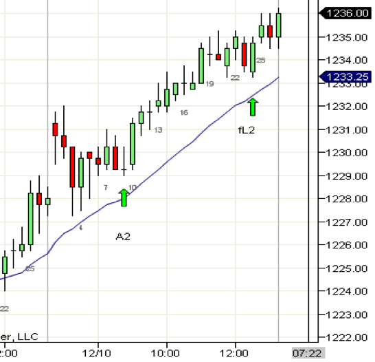

软趋势日要放慢节奏
https://ninetrans.blogspot.com/2010/12/slow-down-on-soft-trend-days.html
除了b27处清晰的A2做多信号外，其余做多信号看起来都很糟糕。几乎每一个做空信号都失败了，一路做空到顶部的逆势交易者损失惨重。在有大量带影线的重叠K线的日子里，逆势交易者表现不错。今天可能是在失败的L2处挂单入场的绝佳时机。

应对重叠日的另一种方法是放慢节奏，切换到15分钟图。在这种日子里让你反复止损的交易风格，在更慢的图表上会效果很好。
今天在b9给出了A2做多信号，在b24给出了失败的L2信号。与更慢的图表一样，信号确实更少，但它们往往更有效。如你所见，一直到b21为止，没有一根K线跌破其前一根K线的低点。
正如你在慢速市场中要放慢节奏一样，在快速市场中应该加快节奏。开盘的第一个小时通常行情波动很快，在1分钟图上放慢节奏会发现一些有趣的交易机会。开盘K线形成了一个交易区间，b27向上突破后失败，给出了失败突破（fBO）信号。这一波行情走出了与区间大小相等的测量目标位。